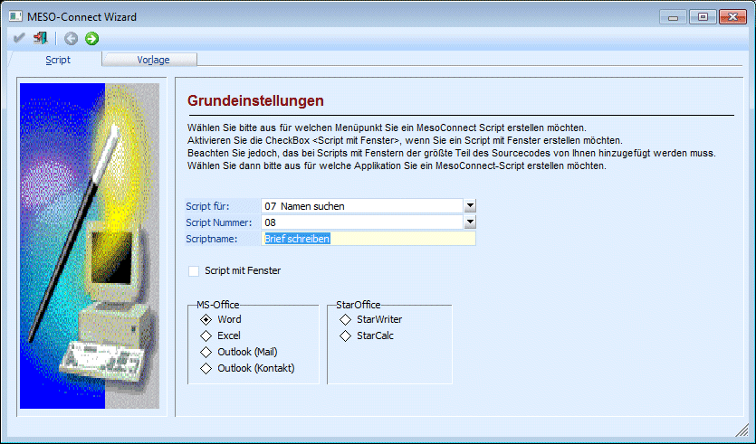
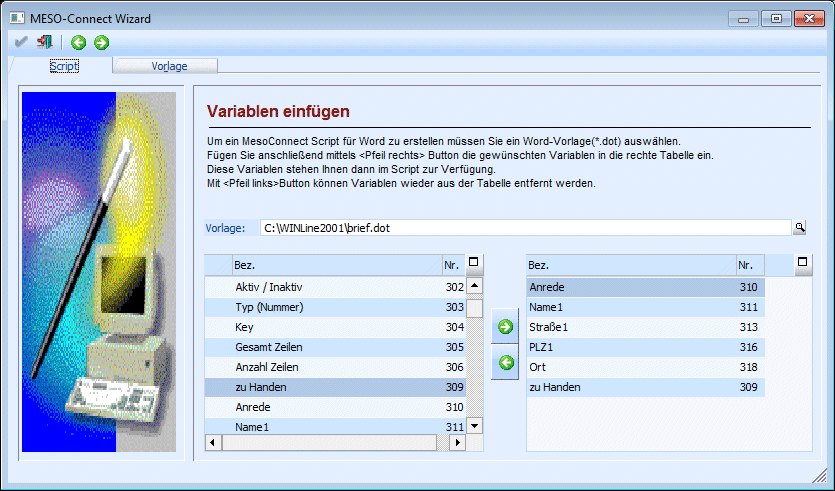
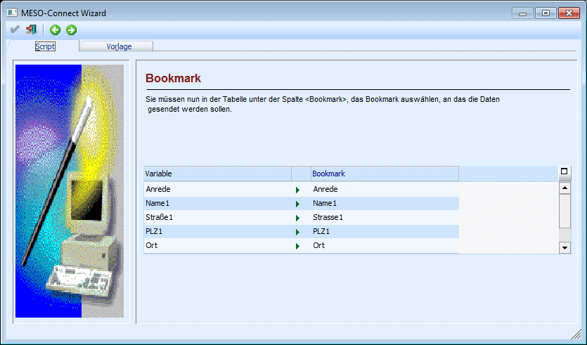
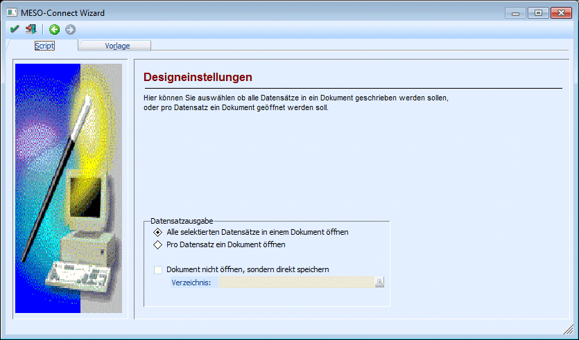
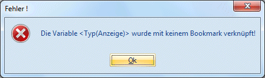
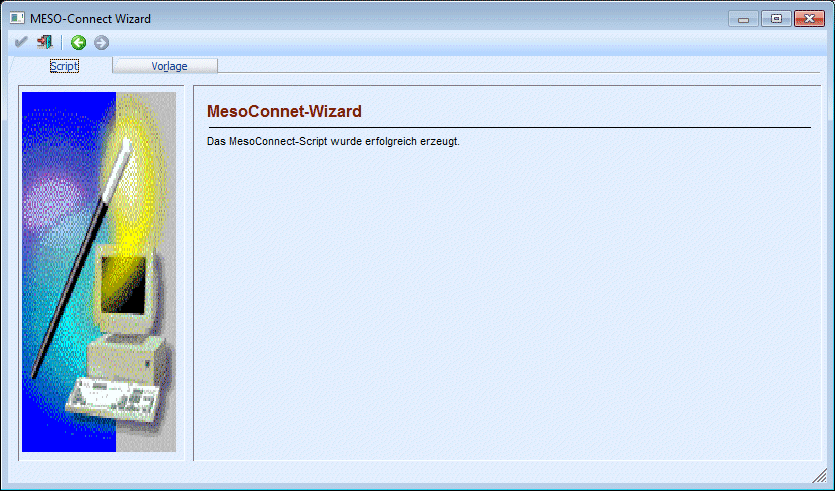

Der MESO-Connect Wizard, der im Programm WinLine START über den Menüpunkt
1 Parameter
1 MESO Connect
durch Anklicken des Wizard-Buttons aufgerufen werden kann, ist ein Tool, mit dem man auf einfache Art und Weise ein Script erstellen kann, das dann in den verschiedensten Datenbereichen eingesetzt werden kann.
Der Wizard ist in mehrere Schritte unterteilt und ermöglicht es auch einem "Nicht-Programmierer" ein Script zu erstellen.
1. Schritt - Grundeinstellungen
Hier können die Grundeinstellungen für das Script vorgenommen werden. Abhängig von diesen Einstellungen unterscheidet sich in weiterer Folge auch der Wizard. Nachdem sich aber der Wizard in vielen Bereichen ähnlich ist, wird exemplarisch nur die Vorgangsweise mit MS-Word beschrieben (da diese Variante wegen der Vorlage die schwierigste Methode ist).

Ø Script für:
Aus der Auswahllistbox kann der Datenbereich gewählt werden, für den das Script erzeugt werden soll. Das bedeutet, dass das neue Script auch nur für diesen Datenbereich zur Verfügung steht. Soll ein Script in mehreren Datenbereichen zur Verfügung stehen, muss das Script auch öfter angelegt werden.
Ø Script Nummer:
Aus der Auswahllistbox kann gewählt werden, unter welcher Nummer das Script in weiterer Folge aufgerufen werden kann. Hier sollte, wenn möglich, ein leerer Eintrag verwendet werden.
Ø Scriptname:
Hier kann der Name eingetragen werden, den das Script erhalten soll.
Ø Script mit Fenster
Wird diese Checkbox aktiviert, dann kann zwar ein Script erstellt werden, der Inhalt des Scripts muss dann allerdings selbst programmiert werden. In diesem Fall kann nur mehr der OK-Button angeklickt werden.
Ø Applikation
Hier kann gewählt werden, welche Applikation mit dem Script beschickt werden soll, wobei zwei Typen von Applikationen zur Verfügung stehen:
MS-Office mit den Programmen
ü Word
ü Excel
ü Outlook (Mail)
ü Outlook (Kontakt)
und StarOffice mit den Programmen
ü StarWriter
ü StarCalc
Durch Anklicken des VOR-Buttons gelangt man in das nächste Fenster, wobei es von der ausgewählten Applikation abhängt, welches Fenster als nächstes kommt.
Wenn die Option Word gewählt wird, dann wird für die korrekte Übergabe der Daten eine Vorlage (DOT-Datei) benötigt. In dieser DOT-Datei werden sogenannte Bookmarks gespeichert, die dann beim Ausführen des Scripts durch Daten ersetzt wird. Vorlagen für die Übergabe der Daten nach Word können über das Register Vorlage (nähere Infos siehe auch Kapitel Vorlagen Wizard) angelegt werden.
D.h. wenn als Applikation Word verwendet wird, muss im 2. Schritt zuerst die Vorlage eingegeben werden.

Im Feld
Ø Vorlage
kann auch durch Drücken der F9-Taste nach allen vorhandenen Vorlagen gesucht werden.
Aus der linken Tabelle können nun die Variablen ausgesucht werden, die in weiterer Folge an Word als Daten übergeben werden sollen. Dabei können die Variablen durch einen Doppelklick oder durch Anklicken des - Buttons in die rechte Tabelle transferiert werden. Nicht mehr benötigte Variablen können durch den Button wieder zurückverschoben werden.
Wenn alle Variablen ausgewählt wurden, kann durch Anklicken des VOR-Buttons in den nächsten Schritt gewechselt werden.
In diesem Bereich muss nun die Zuordnung der Variablen zu den Bookmarks erfolgen, d.h. damit wird festgelegt, welche Bookmark bei der Ausgabe des Word-Dokuments mit welcher Variable ersetzt wird.

In der linken Tabelle werden alle Variablen ausgewählt, die im vorherigem Schritt ausgewählt wurden. In der rechten Tabelle kann nun jeweils die Bookmark aus der Auswahllistbox gewählt werden, die der Variable zugeordnet werden soll. Es sollte darauf geachtet werden, dass alle Variablen einer Bookmark zugeordnet wird, ansonsten kann die Variable auch nicht im Word-Dokument angedruckt werden.
Wenn alle Zuordnungen getroffen sind, kann durch Anklicken des VOR-Buttons in den nächsten Schritt gewechselt werden. Durch Anklicken des Zurück-Buttons können nochmals die Variablen selektiert werden. Dabei ist aber darauf zu achten, dass dann die Zuweisung der Variablen zu den Bookmarks verloren geht.
Im letzten Schritt des Wizard kann noch entschieden werden, wie die Word-Dateien erzeugt werden sollen.

Dabei gibt es folgende Möglichkeiten:
ü Alle selektierten Datensätze in
einem Dokument öffnen
Bei Auswahl dieser Option wird eine DOC-Datei erzeugt,
die dann pro Datensatz eine Seite enthält. Das ist auch die
Standardeinstellung.
ü Pro Datensatz ein Dokument
öffnen
Bei dieser Option wird für jeden Datensatz eine eigene DOC-Datei
erzeugt, was bei einem Serienbrief ggf. dazu führen kann, dass sehr viele
Dateien offen sind, was nicht unbedingt ein Vorteil für die Performance des PCs
ist.
Wenn die Option
Ø Dokument nicht öffnen, sondern direkt speichern
aktiviert ist, dann kann im Eingabefeld
Ø Verzeichnis
das Verzeichnis angegeben werden, in dem das (oder die) Word-Dokumen(e) gespeichert werden sollen. Über die Matchcode-Funktion kann auch nach allen Verzeichnissen gesucht werden. In diesem Fall wird bei der Abarbeitung des Scripts Word auch nicht geöffnet, sondern es wird nur die DOC-Datei erzeugt und kann aus dem eingestellten Verzeichnis abgerufen werden.
Durch Drücken der F5-Taste wird das Script gespeichert, wobei auch gleich eine Prüfung vorgenommen wird. Wurden z.B. nicht alle ausgewählten Variablen einer Bookmark zugeordnet, wird eine entsprechende Fehlermeldung ausgegeben:

Wurden keine Fehler gefunden, wird das erfolgreiche Speichern des Scripts auch angezeigt:

Damit kann das Fenster durch Drücken der ESC-Taste beendet werden.